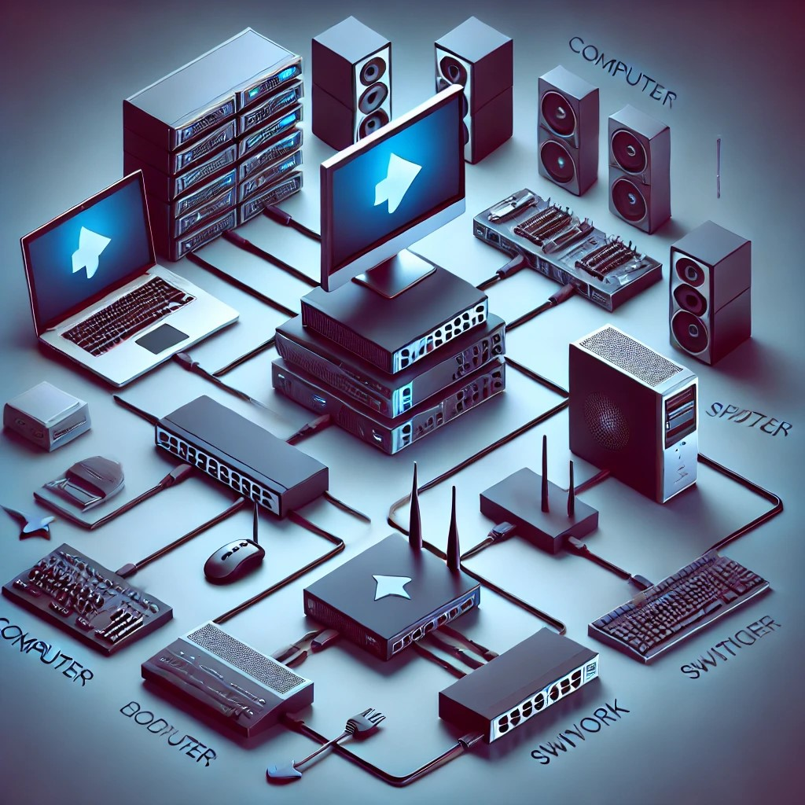
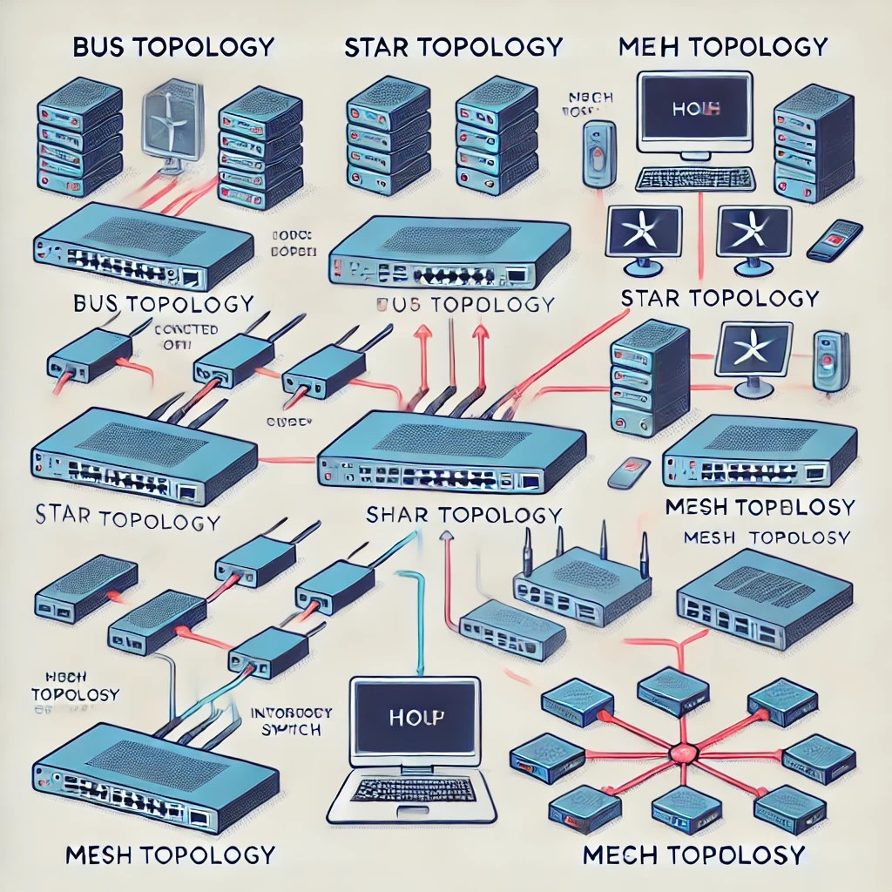

Introduction
In today's interconnected world, how do computer networks enable the communication, data transfer, and resource sharing that drive organizations, institutions, and individual users? Understanding the components of a computer network is essential to grasp how these systems function, from simple home setups to complex enterprise environments. What are the hardware and software elements that allow devices to communicate, exchange data, and share resources like files and printers? By exploring the key components—hardware devices, transmission media, protocols, and network topologies—we can uncover the foundations of modern networking.
Network Devices (Hardware)
Here is a diagram showing the physical hardware devices that make up a computer network, including routers, switches, computers, and peripherals. It highlights the connections and data flow between these devices.
What physical devices make up the hardware components of a computer network, allowing it to function and connect various systems? These include computers, networking hardware like routers and switches, and peripherals that facilitate data transmission and communication between devices.
Router
Here’s the image of the network setup diagram you requested.
Routers are networking devices that forward data packets between networks. They direct traffic by determining the best path for data packets to travel, ensuring they reach their destination. Routers also enable communication between networks, such as a local area network (LAN) and the Internet. They work at the OSI model's Layer 3 (the Network Layer) and can connect multiple networks (Forouzan, 2017)
Switches
Here’s the image of the LAN setup diagram you requested.
Switches are crucial in connecting devices within the same network, specifically a LAN. Operating at Layer 2 (the Data Link Layer) of the OSI model, switches receive data packets and send them to the appropriate device based on the packet's destination MAC (Media Access Control) address. They are essential in improving network efficiency and reducing traffic bottlenecks within a LAN (Tanenbaum & Wetherall, 2010).
Modems
Here’s the diagram of the modem setup you requested.
Modems modulate and demodulate digital signals into analog signals, allowing data to be transmitted over telephone lines or other long-distance transmission media. Modems are particularly useful in environments where digital communication occurs over analog mediums, such as older internet connections like dial-up.
Network Interface Card (NIC)
Here's the first image illustrating the Network Interface Card (NIC) concept.
NICs are hardware components installed on computers or other devices to allow them to connect to a network. They serve as the interface between the device and the network cable or wireless connection, converting data into electrical signals that can be transmitted over the network.
Transmission Media
Here is the image representing the different types of transmission media, both wired and wireless.
Transmission media refers to the means through which data is transmitted from one device to another within a network. It can be categorized into two types: guided media (wired) and unguided media (wireless).
- Wired Media: Wired media includes physical cables, such as twisted pair cables, coaxial cables, and fiber-optic cables. Twisted pair cables are commonly used in Ethernet networks and consist of pairs of copper wires twisted together to reduce electromagnetic interference. Coaxial cables, often used in cable TV networks, are made up of a central conductor surrounded by insulation. Fiber-optic cables use light to transmit data and are known for their high speed and long-distance capabilities, often used in backbone networks (Stallings, 2016).
- Wireless Media: Wireless media refers to the use of electromagnetic waves to transmit data. This includes technologies such as Wi-Fi, Bluetooth, and cellular networks. Wi-Fi is a common wireless technology that allows devices to connect to the internet or a local network without the need for physical cables. Wireless transmission is less secure than wired transmission, as signals can be intercepted by unauthorized devices, making encryption a crucial part of wireless networking.
Network Protocols
Here's the image illustrating network protocols, including TCP/IP, HTTP, and SMTP.
Protocols are the rules and conventions that govern data communication between devices in a network. These protocols define how data is formatted, transmitted, and received by devices. Two of the most important sets of protocols in computer networking are the Internet Protocol (IP) and Transmission Control Protocol (TCP).
- Transmission Control Protocol/Internet Protocol (TCP/IP): TCP/IP is the fundamental protocol suite used for communication over the internet. TCP ensures reliable transmission of data by breaking it into packets, verifying its delivery, and reassembling it at the destination. IP is responsible for addressing and routing packets to ensure they reach the correct destination. Together, TCP/IP enables the reliable and efficient exchange of data over networks of all sizes, from small local networks to the global internet (Comer, 2018).
- Hypertext Transfer Protocol (HTTP): HTTP is a protocol used for transmitting hypertext, such as web pages, over the internet. It operates on top of the TCP/IP protocol and allows for communication between web browsers and servers. When a user accesses a website, HTTP ensures that the request for the web page is delivered to the correct server, and the server’s response is sent back to the user's browser.
- Simple Mail Transfer Protocol (SMTP): SMTP is used for sending email messages across networks. It defines how mail is transmitted from a sender to a recipient through an email server. SMTP works alongside other protocols like the Post Office Protocol (POP) and Internet Message Access Protocol (IMAP), which handle email retrieval and storage.
Network Topology
Here is a diagram illustrating different types of network topologies, showing how devices are connected and how data flows in various layouts such as bus, star, and mesh topologies.
A network topology refers to the physical and logical design of a network, showing how nodes and connections are organized. These nodes typically consist of devices like switches, routers, and software with similar functionalities. Topologies are often depicted as graphs and illustrate the layout of the network, including how devices are connected and how data moves between them. There are several commonly used network topologies in practice.
- Bus Topology: In a bus topology, all devices are connected to a single central cable, known as a bus. Data is transmitted in both directions along the cable, and devices receive all data but only process the data intended for them. Bus topologies are easy to implement but can experience traffic congestion and are less fault-tolerant (Kurose & Ross, 2021).
- Star Topology: A star topology consists of devices connected to a central hub or switch. All data transmissions pass through this hub, which forwards the data to the appropriate device. Star topologies are highly scalable and easy to manage, but the central hub represents a single point of failure, which can cause the entire network to fail if it goes down.
- Mesh Topology: In a mesh topology, each device is interconnected with multiple other devices, creating a highly redundant and fault-tolerant network. Mesh topologies are often used in mission-critical environments like military communications or data centers, where network failure is unacceptable. However, they can be complex and expensive to implement.
Network Software
Here is a diagram illustrating how network software operates, including features like device communication, user authentication, resource management, and network performance monitoring.
Alongside hardware and protocols, network software is critical for managing network operations. Operating systems, such as Windows Server or Linux, often come with built-in networking capabilities that facilitate communication between devices, user authentication, and resource management. Additionally, network management software allows administrators to monitor network performance, configure devices, and troubleshoot issues.
Conclusion
The components of a computer network—network devices, transmission media, protocols, topologies, and software—work together to enable the seamless exchange of data between devices. Each of these components plays a vital role in ensuring that data is transmitted reliably, efficiently, and securely. Whether it's a small home network or a large-scale enterprise system, understanding these fundamental components is essential for anyone studying or working in the field of information technology.
References
- Comer, D. E. (2018). Computer networks and internets (6th ed.). Pearson.
- Forouzan, B. A. (2017). Data communications and networking (5th ed.). McGraw-Hill Education.
- Kurose, J. F., & Ross, K. W. (2021). Computer networking: A top-down approach (8th ed.). Pearson.
- Stallings, W. (2016). Data and computer communications (10th ed.). Pearson.
- Tanenbaum, A. S., & Wetherall, D. J. (2010). Computer networks (5th ed.). Pearson.